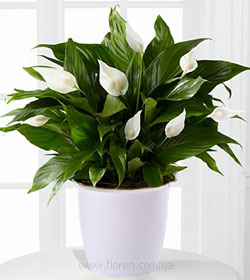
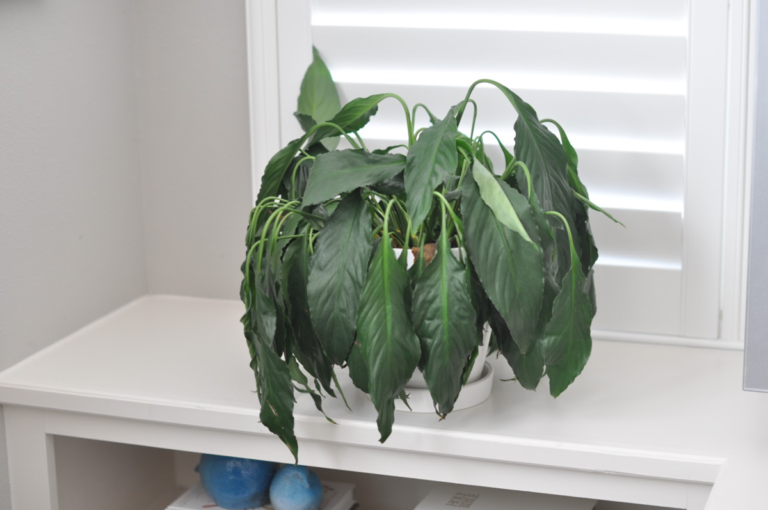
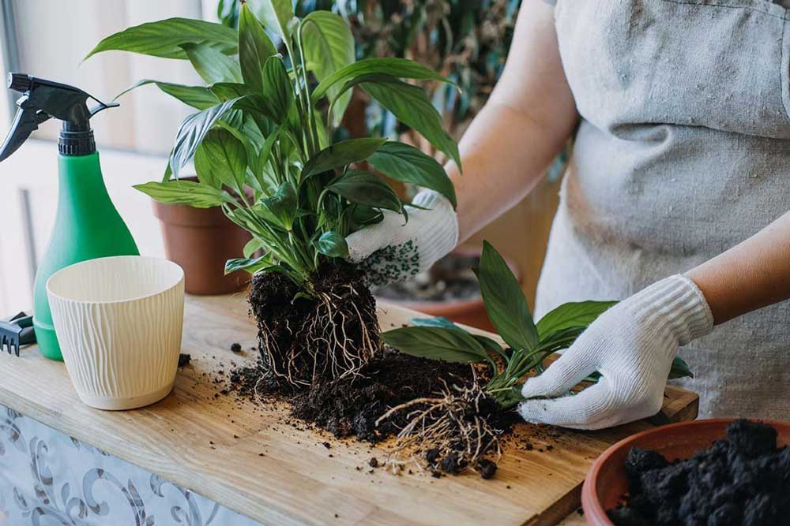

Спатифілум - догляд за рослиною
Спатифілум – ідеальна рослина для домашнього вирощування. Вічнозелений, колоритний, з красивими квітками спатифілум походить з родини ароїдних. Він потрапив на наші підвіконня з тропіків. Його вотчина – болотисті ліси, береги водойм. За період культивації квітникарям вдалося вивести безліч сортових різновидів спатифілума.Рослину можна бачити в карликовій і гігантській інтерпретаціях, з зеленими або плямистими листками, квітками різних відтінків. Спатифілум безумовно стане окрасою квіткової колекції та інтер'єру приміщення.Популярності рослині сприяє не тільки простота догляду в домашніх умовах і його неймовірна естетичність, а й слава про те, що рослина дарує жіноче щастя. Але щоб спатифілум проявив свою силу, його потрібно правильно вирощувати. Хвора рослина з пожухлими листками навряд чи зможе творити дива.
Спатифілум: догляд в домашніх умовах
Розташування
Підібрати комфортне місце для спатифілума не так вже й просто. Рослина світлолюбна. Її листки наполегливо тягнуться до світла, але смертельно бояться сонця. Тому оптимальним куточком для проживання спатифілума є підвіконня вікон, які виходять на північ. У всіх інших випадках, рятуючи листя, рослину розміщують на полицях, меблевих тумбах або навіть на підлозі. Так спатифілум отримає достатньо світла і не зазнає перегріву.У цілому рослина не дуже вибаглива до нестачі освітлення, однак глибока тінь не дасть їй змогу проявитися у всій красі. Листки спатифілума залишаться маленькими, та і цвісти він почне значно рідше.
Підживлення
Підгодівля для спатифілума життєво важлива, втім, як і для всіх представників ароїдних. На етапі росту і розвитку рослину слід удобрювати двічі на місяць. Надалі це робиться дещо рідше. Більше за всі поживні суміші спатифілум полюбляє настій курячого посліду, але догляд в домашніх умовах це рідко передбачає. Відсутність натуральної добавки листю спатифілума з лишком компенсують мінеральні добрива.
Мікрокліматичні нюанси
Спатифілум –тропічна рослина, яка звикла жити у вологому і теплому середовищі, отже, доглядаючи за рослиною в домашніх умовах, потрібно створити для неї аналогічні умови. Особливу увагу треба звернути на вологість повітря. Якщо воназа низька — рослині потрібне обприскування і проводити душові процедури. Листки спатифілума зрошуються тільки теплою водою. Частота процедур залежить від сезону. У спеку я це роблю щодня, взимку зменшую кількість обприскувань спатифілума до трьох разів на тиждень.
Підказка. Обприскуючи спатифілум, стежте, щоб вода не потрапила на суцвіття.
Добре вплине на стан листя поміщення спатифілума в піддон з мокрим мохом або вологим піском. Відмінні результати дає вирощування спатифілума в акваріумах. Щодо температурних показників спатифиллум менш примхливий. Рослина буде активно цвісти і при + 16 о, і при + 25 о. Любителі провітрювань мають зважати, що листя спатифілума погано реагує на протяги, тому треба стежити, щоб квітка не стояла на шляху руху повітряних потоків.
Полив
Вибагливість спатифілума до вологи позначиться і на поливі. Догляд в домашніх умовах в цьому випадку зведеться до підготовки поливної води. Спатифілум поливають м'якою водою. За змогою давайте рослині талу або зібрану дощову воду. Критерієм оцінювання потреби спатифілума в поливі є стан землі у вазоні. Сигналом до дії буде її просохлий верхній шар. Не заливайте рослину! Надлишок вологи та її застій у вазоні призведе до загнивання коренів.
Хвороби спатифілума
Хоч спатифілум і належить до рослин невибагливих, догляд в домашніх умовах може бути ускладнений її захворюваннями. Найстрашнішими ворогами рослини є:
-
Павутинний кліщ.
Об'єктом знищення стають листки спатифілума. Комаха покриває їх щільним шаром липкої павутини, і це заважає листкам рослини повноцінно розвиватися. Для порятунку спатифілума треба видалити сліди діяльності кліща і промити листки і стебла рослини мильним розчином.
-
Борошнистий червець.
Цей шкідник також часта проблема спатифілума. Причиною його появи стає підвищена вогкість. Ховається паразит також у листках рослини. Виявити його можна під час ретельного огляду вазона. На початковій стадії комах видаляють змоченим у спирті тампоном. У запущених випадках спатифілум обробляють Актеліком. З народних засобів — можна спробувати настій шкірок цитрусових.
-
Сажистий гриб.
Ця хвороба створює спатифілуму серйозні проблеми. Сажистий гриб вражає лицьову поверхню листя. Воно чорніє і не може брати участь у процесах фотосинтезу. Із захворюванням впоратися найпростіше. Видалити гриб зі спатифілума можна, помивши його мильною водою.
-
Щитівка.
На початкових етапах шкідник діє зі спритністю партизанського загону. Сліди його діяльності на спатифілумі практично непомітні. Наявність щитівки зазвичай бачать, коли на листках починають утворюватися темні плями. Вилікувати рослину можна обприскуванням спатифілума тютюново-мильною сумішшю з додаванням гасу або спирту. Для профілактики ураження спатифілума шкідниками є часте протирання зеленої частини мокрою губкою і купання квітки у вазоні під душем, закривши плівкою горщик із ґрунтом.
Пересадка спатифілума
Час пересадки
Рослина однозначно потребує пересадки в період росту і по мірі розростання в горщику кореневої системи. За планом це робиться зазвичай навесні. Не можна чіпати квітнучий спатифілум. Якщо ви вирішили його пересадити, то зробіть це, коли суцвіття відпаде. Потребують пересадки і нещодавно придбані рослини. Це треба зробити не пізніше, ніж через 3 тижні.
Вибираємо ґрунт
Представники ароїдних полюбляють пухкий легкий ґрунт, і спатифілум не виняток. Якщо ви збираєтеся купувати для пересадки готовий ґрунт, то підберіть суміші зі слабкокислою реакцією. Маючи бажання зайнятися підготовкою субстрату для спатифілума самостійно, використовуйте компоненти в таких пропорціях: до двох частин дернової землі додайте по одній частини листової, торфу, крупного піску. Введіть половинну частину деревного вугілля з цегляною крихтою — і грунтосуміш для пересаджування спатифілума готова.
Правила пересадки
Пересадку рослини треба провести дуже обережно. Коріння спатифілума вирізняється крихкістю. Для запобігання їх ушкодженню пересадку краще проводити методом перевалки, тобто не звільняючи корені від земляної грудки. Перш ніж відправити спатифілум в новий горщик, огляньте корені рослини. Якщо вони здорові, то потреби в додаткових обробках не буде. Безпосередньо пересадка спатифілума відбувається так. Насамперед слід зволожити ґрунт і залишити його постояти близько пів години. Потім садовим совочком обійдіть по периметру стінки горщика, обережно відокремлюючи земляну грудку з коренями від поверхні. Видаліть елементи дренажу, які заплуталися в коренях. Тепер спатифілум можна брати і переносити в нову ємність. Процес пересаджування рослини може бути поєднаний із процесом розмноження. У новому горщику, який не надто різниться за обсягами з попереднім, треба облаштувати дренажний шар. Матеріалом для нього слугуватиме галька, керамзит або цегляні шматочки. Дренаж прикривається частиною ґрунту, після чого в горщик опускається спатифілум. Висипаємо залишки ґрунту і ущільнюємо його. Стовбур рослини має бути міцно зафіксований субстратом. Пом'якшити стрес від пересадки можна легким обприскуванням листя рослини.
Особливості післяпересадкового періоду
Догляд в домашніх умовах за пересадженим спатифілумом зводиться до наступного. Перший місяць рослина матиме потребу в посиленому поливі. Полегшити спатифілуму процес акліматизації після пересадки допоможе спорудження для нього міні-парника. Немає потреби будувати щось грандіозне. Впоратися із завданням може звичайний поліетиленовий пакет. Ним повністю обгортають спатифілум і залишають під ковпаком на два тижні. Весь цей час пересаджену рослину потрібно буде вчасно поливати, а імпровізовану теплицю регулярно провітрювати. Якщо спатифілум захворів після пересадки, листки опустилися, і на них проступила жовтизна, не хвилюйтеся. Це може бути сигналом про нестачу зволоження. Для корекції ситуації треба збільшити обсяг поливу й додати зрошення крони. Перші треба проводити як тільки підсохне верхній шар грунту в горщику. Зрошення ж спатифілума допустимі і кілька разів на день.
Розмноження спатифілума
Розмножити рослину можна кількома способами. Як посадковий матеріал можна використовувати насіння, живці або відокремлені від материнського куща спатифілума дітки. Насіння спатифілума слід висівати у зволожену суміш торфу з піском і накривати плівкою. Треба контролювати, щоб ґрунт не був мокрим. Підтримувати його в злегка зволоженому стані допоможе провітрювання. Укорінення живців спатифілума також здійснюють в тепличних умовах. Як грунт в цьому випадку є зволожений перліт. Відбираючи діток спатифілума, треба дивитися, щоб вони мали не менш як три листки і власну серцевину. Їх посадка відбувається за стандартними правилами. Спатифілум – рослина, яка вдячно реагує на хороший догляд. Якщо вона не страждатиме від низьких температур, нестачі поливу, від пекучого сонця і протягів, то віддячить вам естетичним виглядом своїх листків і рясним цвітінням.
На початок